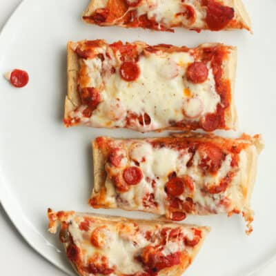

French Bread Pizza

Description:
All be honest, going into this with recipe testing I was thinking
it would more so be a recipe the kids would love – but it turns out that
equally as well adults will absolutely love this French bread pizza too!
It has incredible flavor, perfect texture
(crisp exterior, soft interior) and it’s so easy to customize
(see below for ideas, or just think of your favorite creative pizza and make
that here!).
Not only is it a great after school snack, but it is definitely something I
would proudly serve to guests on the weekend (just pair it with a simple salad
topped with Spaghetti Factory copycat creamy pesto dressing).
Ingredients:
- French bread: Use soft crusted french bread
- Pizza sauce
- Mozzarella
- Parmesan cheese
- Olive Oil
Steps:
- Prepare oven, and baking sheet: Move oven rack up
one level and preheat oven to 425 degrees. Line a rimmed 18 by 13-inch baking
sheet with aluminum foil for easier clean up if desired.
- Cut bread: Cut french bread in half evenly through
the length, to create two long portions. Cut each portion in half and place on
baking sheet.
- Brush bread with oil, lightly toast: Brush both
sides with olive oil. Turn upright and bake in preheat oven 4 minutes.
- Add toppings: Spread pizza sauce over each piece,
sprinkle evenly with mozzarella and parmesan cheeses, then finish with
desired toppings.
- Bake again: Bake in preheated oven until cheese is fully
melted, about 10- 13 minutes. If you’d like it more browned then broil
during the last 1 minute or so (keep a close eye on it!).